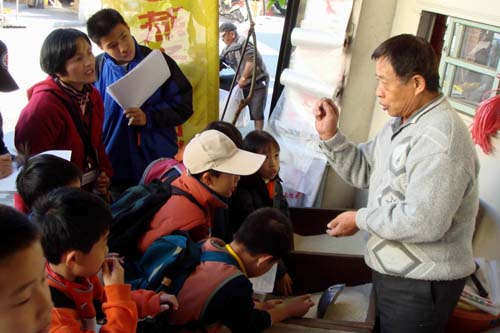
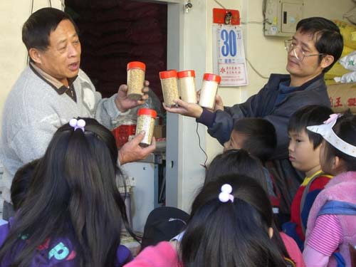

位於埔里鐵山路的慶昌碾米廠，是埔里台地上一家具有歷史記憶的老店。 店家經營至今約有 50 年，目前由第二代王先生接手。
隨著時代改變，現今已不再從事稻米碾製工作，主要以 米的買賣 為主。 店內仍保存著古早時代使用的木製米桶，讓人可以一窺過去農村生活的樣貌。
除了販售米之外，店裡還保存著一臺使用超過 20 年 的豆餅碾碎機。 這臺老機器至今仍持續為當地鄉親服務，將豆餅碾碎，方便農民使用。
古早時代的米桶，保存完整，見證過去農村儲米的生活智慧與歲月痕跡。
使用超過 20 年，至今仍持續運轉，為當地農民碾碎豆餅，延續農耕需求。
從碾米到買賣，從木桶到老機器，記錄了埔里農村產業的轉變與在地記憶。
慶昌碾米廠不僅是一家碾米店，更是埔里台地農村產業變遷的縮影。 一間老店、一只木製米桶，以及一臺仍在運轉的老機器，不只是店家的設備， 也記錄了埔里農村產業從過去到現在的變化。 慶昌碾米廠因此成為埔里台地上一處值得認識的 在地產業記憶。